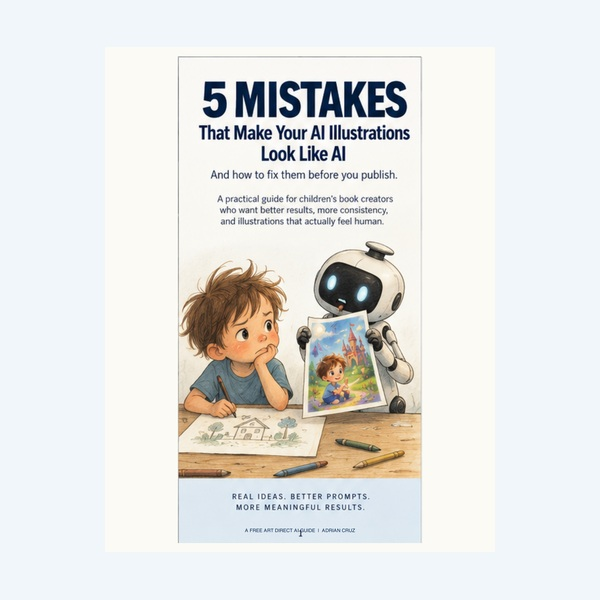
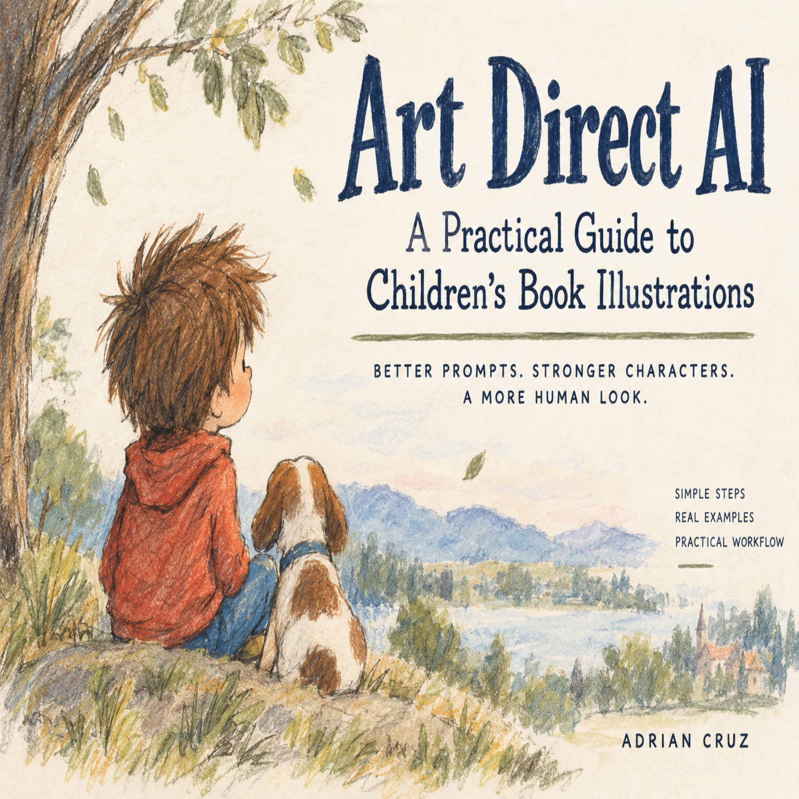
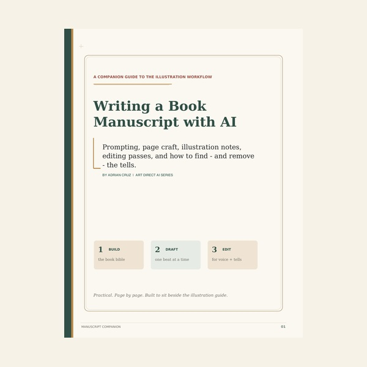

- Glossy eyes and perfect skin
- Every strand of hair rendered
- Busy decorative backgrounds
- Cinematic lighting that fights the story
FOR CHILDREN'S-BOOK CREATORS USING GENERATIVE AI
Your AI isn't the problem.
Your art direction is.
Readers can spot the default AI look. The answer isn't hiding the tool — it's learning to direct it with the same intention you'd bring to any other creative medium.
No magic prompt. No one-click book. Just a better creative process.
AI SLOP!
BOT VOMIT!
"You're not an artist!"
"Lazy!"THE PROBLEM
Prompting for a picture is not the same thing as directing an illustration.
Ask for “a beautiful watercolor children's-book illustration” and the model often gives you the same glossy eyes, detailed hair, cinematic lighting, decorative clutter, and overly finished surfaces it gives everyone else.
The model keeps adding. A good art director knows what to take away.
THE DIFFERENCE
Don't ask AI to impress you. Tell it what the book needs.
- Simple shapes and restrained marks
- Quiet areas left intentionally unfinished
- A visual identity that belongs to one book
- Detail only where the story needs it
FREE GUIDE
5 Mistakes That Make Your AI Illustrations Look Like AI
A fast visual diagnosis of the habits that make otherwise promising illustrations feel generic, overworked, inconsistent, or instantly machine-made.
✓ Spot the obvious AI tells✓ See what restraint changes✓ Diagnose weak results faster✓ Know when “more” is making it worse

FREE 6-PAGE QUICK GUIDE
Start fixing the “AI look” today.
Get the visual guide free through Gumroad. It includes five concrete mistakes, before-and-after direction, and the exact next step when you're ready for the full workflow.
Get the free guideFree download. Gumroad handles delivery.
THE COMPLETE PRODUCT
Art Direct AI
A practical system for getting intentional, book-ready illustration out of generative AI without settling for the default look.

The free guide shows you what is going wrong. The complete guide shows you how to take control of the process from the first visual decision through a finished children's-book spread.
Make the work feel intentionally illustratedKeep a book visually coherent from page to pageGet more useful results with fewer wasted generationsControl when an image should feel simple or finishedCatch the details that make readers call out AITurn inconsistent outputs into a usable body of work
AVAILABLE NOW$19.99
Get the complete guideDetailed workflows, examples, templates, and the full working method stay inside the paid guide.
WRITING COMPANION
Direct the manuscript, too.
Before you art-direct the images, build a story worth illustrating. This companion guide covers story bibles, page-by-page drafting, illustration notes, editing passes, AI “tells,” and reusable prompt templates.
AVAILABLE NOW$19.99
Get the writing companion
“AI should give you material to work with — not permission to stop working.”
That's the entire philosophy behind Art Direct AI.